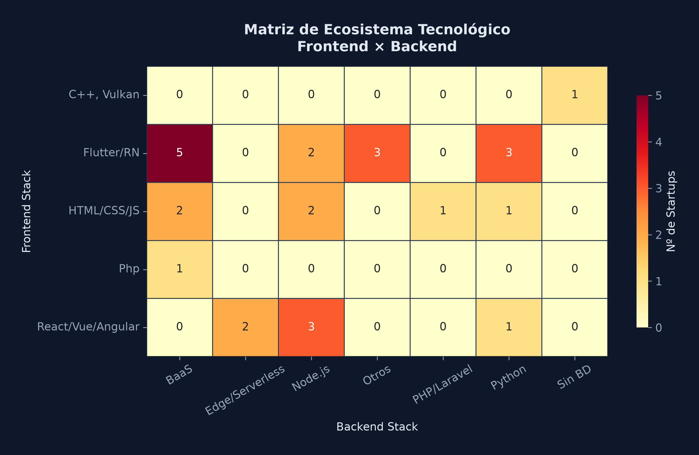
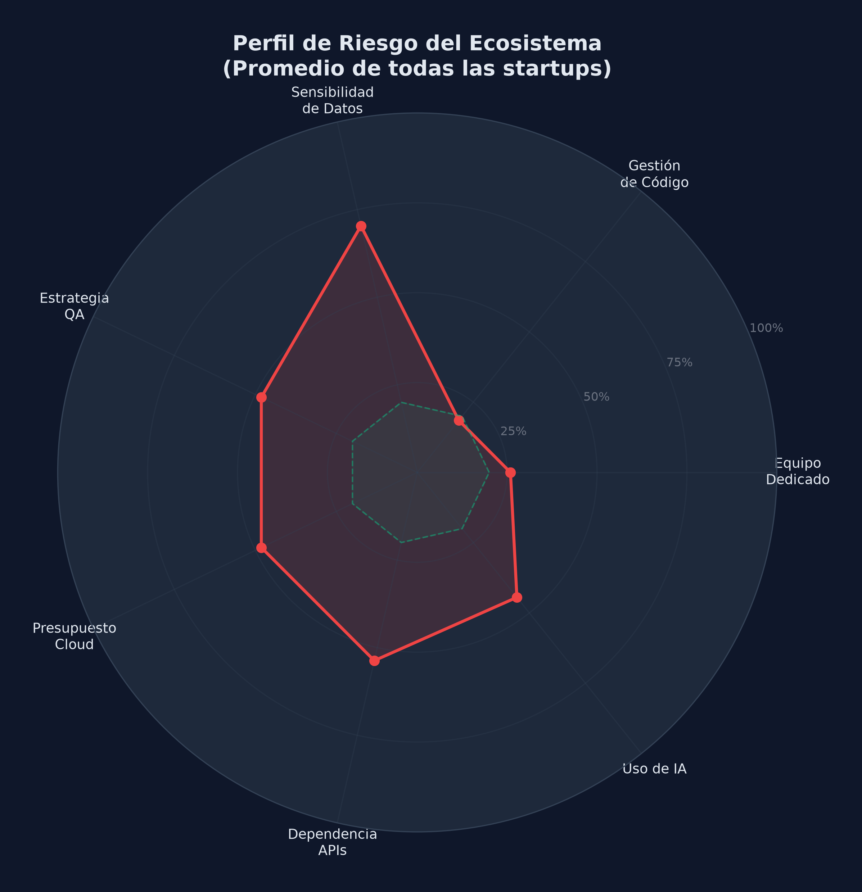
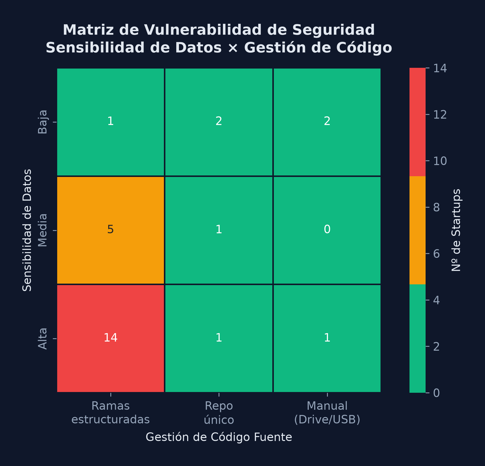
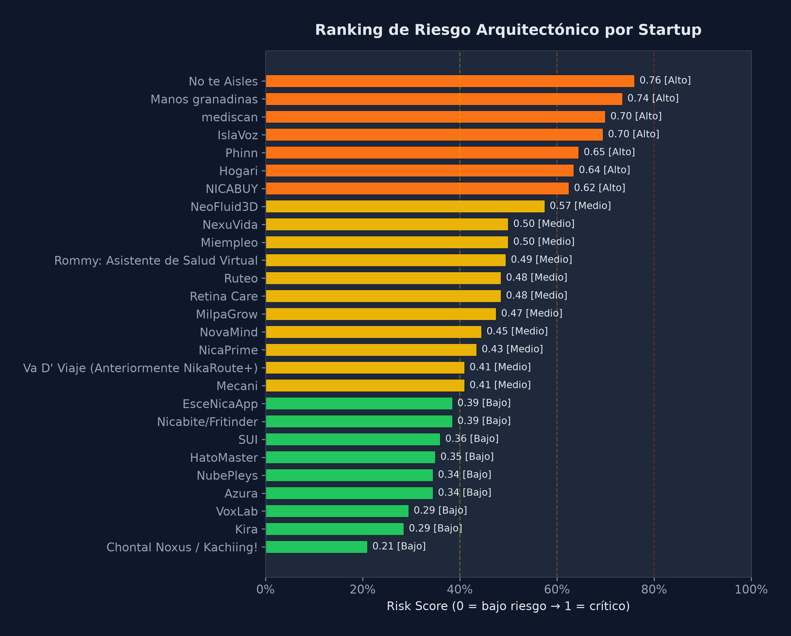
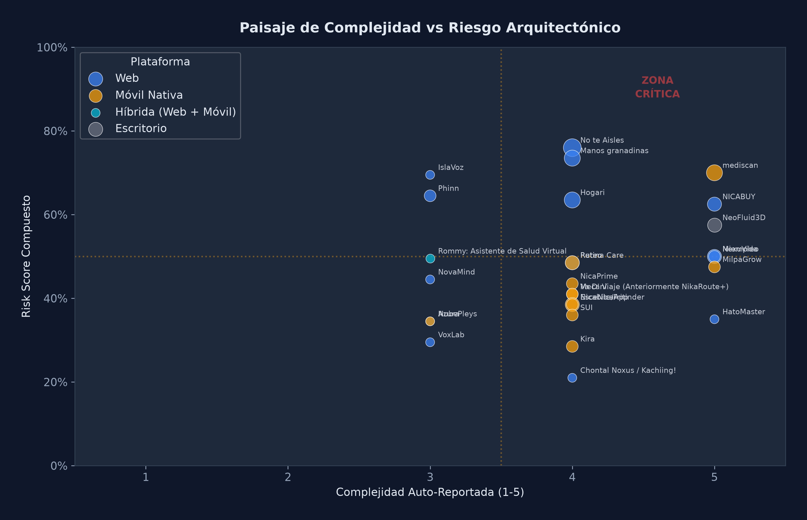
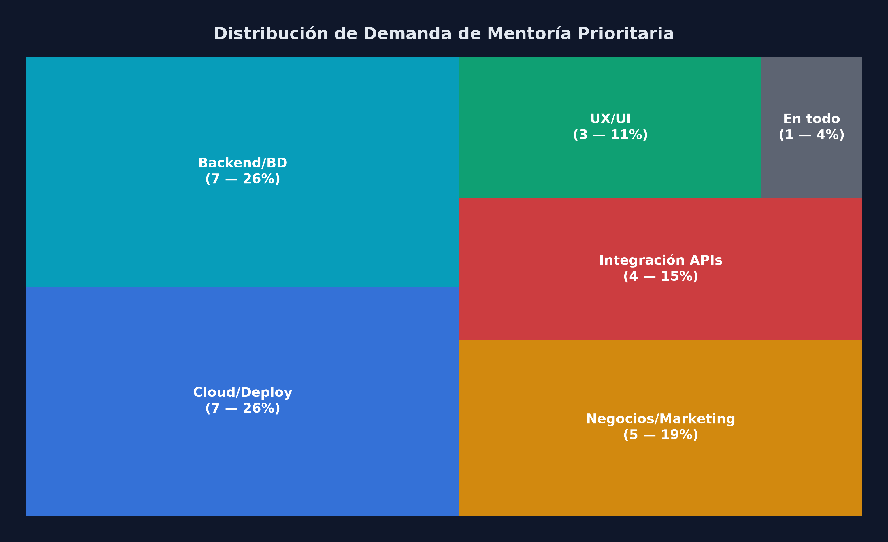

El presente documento resume los hallazgos preliminares de un diagnóstico técnico realizado a una muestra de 23 startups que respondieron al formulario inicial en el momento del corte de datos. Este análisis, basado en las respuestas obtenidas a través del Formulario de Diagnóstico de Arquitectura, evalúa áreas como la conformación de equipos, manejo de código y tecnologías seleccionadas.
Se presenta como una prueba de concepto para identificar posibles sugerencias de acompañamiento que aseguren la estabilidad y viabilidad técnica de los proyectos a largo plazo.
A partir de la muestra analizada, se identifican las siguientes tendencias en las herramientas elegidas por los equipos:


El análisis sugiere considerar las siguientes áreas para fortalecer el desarrollo de los proyectos:
Observación en muestra: Va D' Viaje (Anteriormente NikaRoute+)
Se identificó un caso donde el manejo de datos sensibles coincide con una gestión de código aún en transición hacia herramientas de control de versiones profesionales.
Propuesta: Fomentar el uso de repositorios en la nube con ramas estructuradas, práctica ya adoptada por el 73.9% de la muestra.
Casos identificados (Brecha de QA): No te Aisles, Kira, MilpaGrow, NexuVida, NicaPrime, Nicabite/Fritinder, Hogari, NeoFluid3D, NICABUY, Retina Care, Manos granadinas.
Para proyectos con lógica compleja (Complejidad ≥ 4), se sugiere estructurar planes de pruebas para mitigar riesgos técnicos.
Propuesta: Introducir conceptos de pruebas manuales estructuradas o QA básico.
Casos identificados (Riesgo de Presupuesto): No te Aisles, Nicabite/Fritinder, Hogari, Manos granadinas.
Se propone apoyar a estos equipos de alta complejidad que aún no cuentan con un presupuesto técnico definido.
Propuesta: Revisión de alternativas 'Free Tier' y optimización de servicios.

A partir de la muestra, se identifican proyectos que podrían beneficiarse de un acompañamiento técnico más cercano debido a su complejidad y alertas activas:

Diagnóstico Sugerido: Proyecto con 4 flags activos (Presupuesto, Tensión de Equipo, QA y APIs). Se sugiere revisar la priorización de funcionalidades.
Propuesta de Acción: Sesión de simplificación técnica y priorización de funciones críticas.
Diagnóstico Sugerido: Uso de métodos manuales para código y falta de presupuesto explorado para un proyecto de complejidad alta.
Propuesta de Acción: Migración inmediata a GitHub y taller de costos en la nube.
Diagnóstico Sugerido: Alta sensibilidad de datos combinada con falta de desarrolladores dedicados y brecha de QA.
Propuesta de Acción: Orientación hacia arquitecturas simplificadas y de bajo costo.


Estructura sugerida para las sesiones de mentoría técnica basándose en la disponibilidad operativa:
| Día | Horario | Foco Técnico | Equipos Asignados |
|---|---|---|---|
| Miércoles | 17:00 - 22:00 | Bases de Datos, Lógica y Casos Críticos | No te Aisles, IslaVoz, Hogari |
| Viernes | 17:00 - 22:00 | Seguridad, APIs y Estructura | Va D' Viaje, NexuVida, Mecani |
| Jueves | 17:00 - 19:00 / 20:00 - 22:00 | Control de Calidad y Pruebas | MilpaGrow, NicaPrime, Nicabite |
| Martes | 17:00 - 18:00 / 19:00 - 22:00 | Revisión de Arquitectura y Costos | Rommy, NovaMind + 2 equipos |
| Lunes | 17:00 - 18:00 / 19:00 - 22:00 | Validación de Avances | 5 equipos de progreso adecuado |
| Sábado | 17:00 - 22:00 | Consultas Generales y Apoyo a Mentores | Espacio abierto |
Este esquema garantiza que los equipos con mayores riesgos reciban orientación técnica en bloques de tiempo dedicados y sin interrupciones.